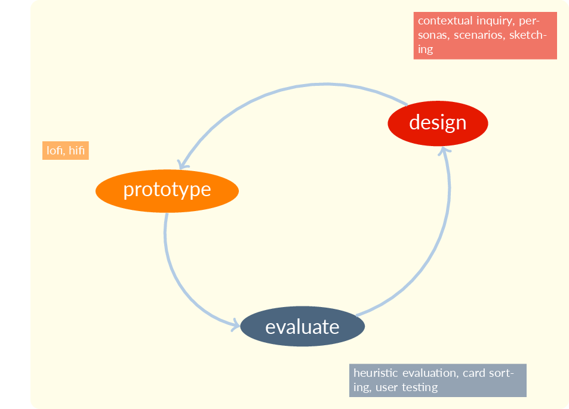

UX Prototyping:
Intro
2025-01-14
Week ONE
How to Start?
Read the syllabus?
(eventually we’ll hafta, but it’s a boring way to start)
Go around the room saying our names?
(eventually we’ll hafta, but better if we’re energized)
Get the juices flowing!
WHY?
I think it’s better to start with an exercise that reminds us of what we do, no matter how proficient we are at it.
I need to know something about you and this is a very revealing exercise.
EDIPT
- Empathize
- Define
- Ideate
- Prototype
- Test
‹watch video›
Now do what they did!
Materials
- three pages (actually two pieces of paper, one is double-sided)
- some index cards (about 6)
- some colored sharpies (at least 2)
- a pen or pencil
Form Groups
- first form a pair or trio with someone like you (that’s for today)
- then form a group of five with a pair or trio that identifies differently from you (gender, ethnicity, or other identity factors) (that’s for the milestones and can be done at the end of class)
- this gives you support (pair or trio) and diversity (group of five)
Protocol
- Empathize (interview)
- Define (list of needs)
- Ideate (storyboard sheet)
- Prototype (cards)
‹interview›
- break into pairs so everyone gets a chance to be interviewer and interviewee
- interview is about supporting new year’s resolutions
- if you’re a trio go 2-on-1 or 1-on-2 either way
‹make a list of needs›
- analyze the interview
- be sure to think about what they meant, not just what they said
- think about how you could have gotten more from the interview
‹storyboard›
- draw four panels of cartoons on the ideate page
- show a successful interaction with an app
- don’t worry about the app details
- concentrate on the user experience—what did the user feel?
‹prototype›
- now use the index cards
- draw a few main app screens
- focus on making it easy for the user
- think about the circumstances of use
test
- we’re skipping the test phase due to time constraints
- but keep your cards so you can test later
- it’s never too early to test
- but testing is the focus of a different course
our focus: prototype

what did we learn?
- give me your insights about each phase and write them in your sketchbook
- phases were
- empathize (interview)
- define (list)
- ideate (storyboard)
- prototype (cards)
‹intros›
‹syllabus›
‹canvas›
Accessibility
https://mickmcquaid.com/accessibility/01understanding
https://mickmcquaid.com/accessibility/02context
https://mickmcquaid.com/accessibility/03uiFacilitatorsBarriers
References
END
Colophon
This slideshow was produced using quarto
Fonts are League Gothic and Lato